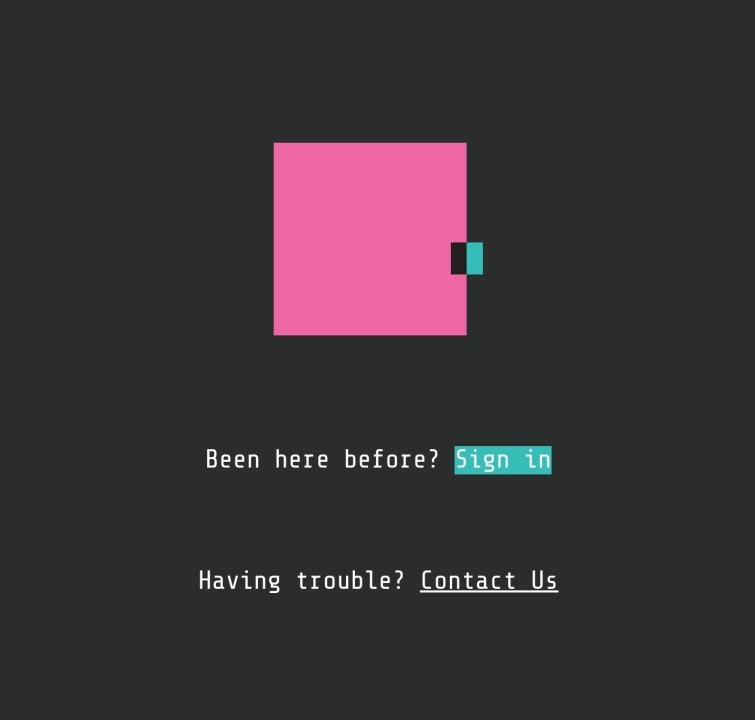

My objective is to take what I learn at UTS and apply it to the world of information technology. After completion of my course at UTS, I aim to secure a job as a software engineer in any of the Big Four information technology companies, especially Google being my dream company. After gaining at least two years of work experience, I want to further continue my studies to become an Software Enterprise Architect.

I also have access to Google Foobar.
Google Foobar is a secret way of recruiting top developers and programmers from around the world.
It includes challenges occurring instantly on the screen of the developer when they search for some specific
keywords related to coding. If anyone solves all 5 levels of this challenge, Google will hire them. I have solved level 1 of this challenge.
Since this is a once-in-a-lifetime opportunity,
I'm saving the rest of the levels for when I graduate from UTS and have enough knowledge to crack all levels.
As stated earlier, Google is my dream company, so this
could be a way for me join Google, who knows?
Access to Google Foobar is by invitation only, which means you only attempt the challenge
when Google invites you. The image on the right is the logo of Google Foobar.
Aryan Sinha | University of Technology Sydney | 31268 Web Systems Autumn 2023
Go To Top